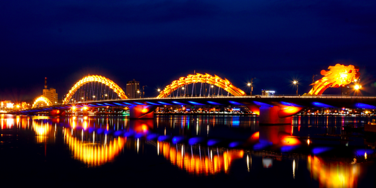
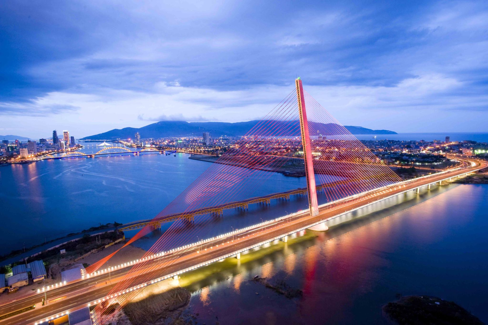
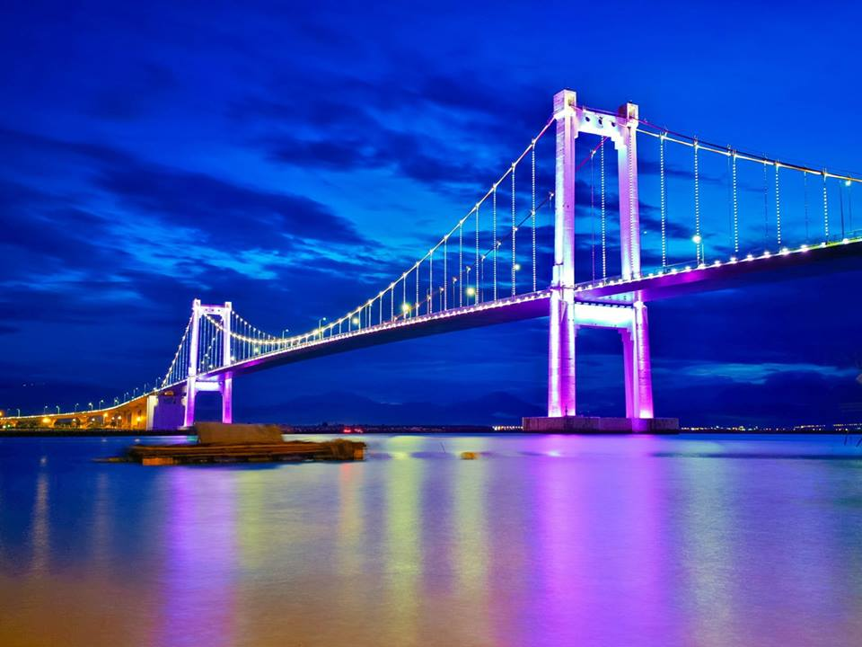
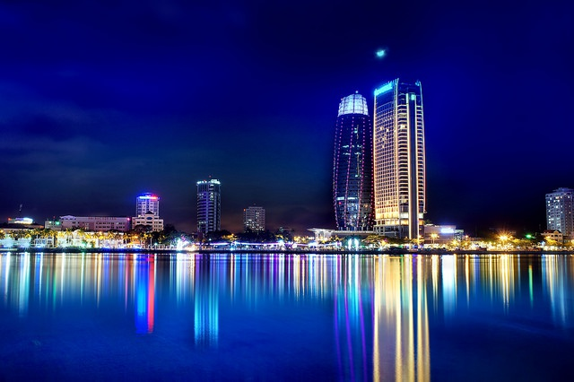
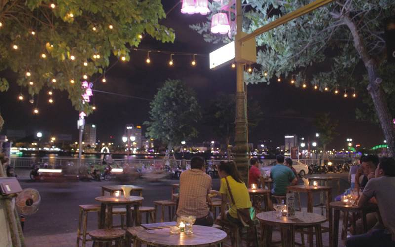
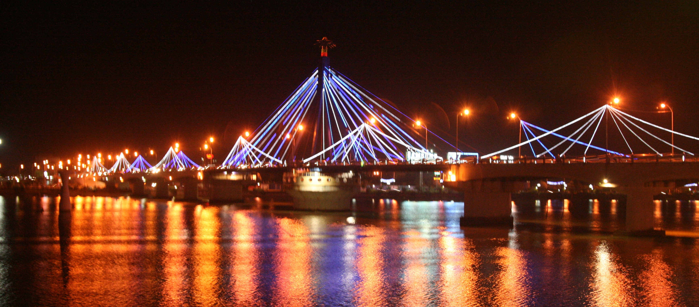

Sông Hàn là điểm thăm quan "nhất định phải tới" của mọi du khách khi du lịch Đà Nẵng. Thế nhưng, để có một trải nghiệm hoàn toàn mới lạ và độc đáo, bạn hãy thử đi du thuyền trên sông Hàn và thưởng ngoạn cảnh thành phố Đà Nẵng về đêm, cũng như là hoạt động ở hai bên bờ sông Hàn nhé.
Là một biểu tượng của thành phố Đà Nẵng, sông Hàn là con sông thơ mộng tựa như một dải lụa nhẹ nhàng mềm mại chảy dài giữa lòng thành phố. Trên dòng sông hiền hoà và nên thơ, những con thuyền hoa rực rỡ đưa du khách dạo chơi trên mặt hồ yên ả và bắt đầu "chuyến du ngoạn" cảnh Đà Nẵng về đêm lung linh sắc màu. Du thuyền sông Hàn sẽ đưa bạn đi ngắm nhìn những cây cầu rực rỡ ở Đà Nẵng.
Trên hành trình du thuyền sông Hàn, bạn sẽ được ngắm nhìn cầu quay sông Hàn – Cây cầu quay duy nhất tại Việt Nam. Cây cầu dường như càng trở nên đẹp và lung linh hơn khi được chiêm ngưỡng từ trên du thuyền trong không gian lộng gió mát rượi. Hơn nữa, cầu sông Hàn còn đánh dấu mốc son phát triển của thành phố và là một biểu tượng cho sức sống mãnh liệt và khát vọng đi lên của người dân thành phố biển Đà Nẵng.
Bạn sẽ không khỏi thích thú và ngưỡng mộ cầu Rồng, cây cầu được làm bằng thép nặng hơn 1000 tấn, có kiến trúc hình dáng con rồng vươn mình bay ra biển vô cùng độc đáo, ấn tượng. Nếu đi vào dịp tối cuối tuần, bạn còn có cơ hội chiêm ngưỡng cây cầu Rồng trình diễn phun lửa và nước vào 9h00 tối thứ 7 và Chủ nhật hàng tuần.
Du khách đi du thuyền sông Hàn sẽ dẫn đến thăm quan cầu Trần Thị Lý bắc qua sông Hàn. Cây cầu nhìn như một cánh buồm căng gió vươn ra biển khơi, tạo nên một góc nhìn vô cùng nghệ thuật làm đẹp thêm thành phố. Cầu Trần Thị Lý không chỉ là niềm tự hào lớn về một sản phẩm lao động sáng tạo mà còn thể hiện mong muốn, ý chí và mang theo khát khao luôn phát triển không ngừng của thành phố trẻ Đà Nẵng.
Nằm ở nơi cuối sông đổ ra biển, cầu Thuận Phước – Cây cầu treo dây võng dài nhất tại Việt Nam lại tựa như một cánh chim hướng ra biển lớn. Cây cầu mang trong mình vẻ đẹp mềm mại, quyến rũ, lộng lẫy và tráng lệ của những ánh đèn rực rỡ nhiều màu sắc giữa một vùng sông nước rộng mệnh mông, chắc chắn sẽ làm xao xuyến nhiều du khách khi du thuyền sông Hàn.
Du thuyền trên sông Hàn, ngoài chiêm ngưỡng những cây cầu lung linh, bạn còn được thả hồn mình trong không gian sông nước bao la và ngắm nhìn khung cảnh đẹp tuyệt diệu dọc hai bên bờ sông Hàn. Đà Nẵng hiện lên vừa thơ mộng, nên thơ với Cầu tàu tình yêu, vừa mang nét nghệ thuật truyền thống của biểu tượng Cá chép hoá rồng, vừa sôi động, phát triển sầm uất với toà nhà hành chính Đà Nẵng và dãy khách sạn, toà nhà cao chọc trời.
Không chỉ đắm mình trong làn gió dịu mát của gió sông, trong suốt hành trình du thuyền sông Hàn bạn còn được xem những màn biểu diễn nghệ thuật độc đáo, đặc sắc trên du thuyền, giao lưu hát cho nhau nghe, hoà mình trong không khí âm nhạc thật sôi động và thả hoa đăng trên sông vào những dịp đặc biệt. Trên tàu cũng phục vụ nhiều loại đồ ăn nên bạn có thể lựa chọn cho mình những món ăn hải sản tươi ngon của vùng biển Đà Nẵng. Với một bữa tối ngon miệng và những trải nghiệm ẩm thực độc đáo, hành trình du thuyền sông Hàn trở nên đặc biệt hơn bao giờ hết.
Phát triển cùng với du lịch và nhu cầu của giới trẻ, hàng loạt các quán pub nhỏ mở lên hoạt động từ chiều cho đến 2-3h sáng. Mặc dù pub thì ở đâu cũng có, nhưng cái đặc biệt của pub ở địa điểm du lịch Đà Nẵng là có góc nhìn hướng ra sông vào ban đêm tuyệt đẹp, vừa sôi động, vừa tĩnh lặng. Một bên là nhộn nhịp tiếng nhạc, một bên là con sông mênh mông im ắng. Tất cả tạo thành một cảm giác khiến ai trải qua một lần rồi cũng cảm thấy nhớ mãi.
Sông Hàn đẹp nhất khi đêm về, khi muôn vàn ánh điện đủ sắc màu từ các tòa nhà cao tầng, từ đường phố dọc 2 bờ sông, từ những cây cầu rọi xuống làm dòng sông trở nên lung linh, huyền ảo. Đây là dòng sông ánh sáng được tạo nên từ hàng chục ngàn hoa đăng, từ những đoàn thuyền hoa diễu hành độc đáo, từ hiệu ứng đèn LED trang trí lắp tại những cây cầu, sông Hàn làm cho cảnh đẹp Đà Nẵng thêm lung linh và có sức quyến rũ với tất cả mọi người.
